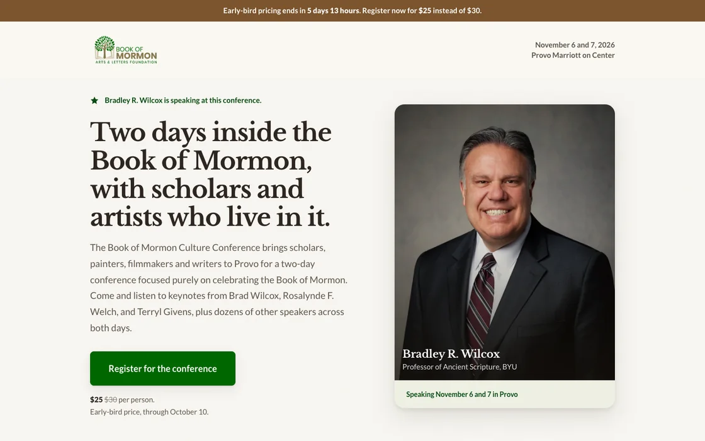

A
Direct response
His face, the date, the price and a button, all above the fold. The page asks for the registration immediately and spends the rest of its length removing reasons to hesitate.
The bet
His audience already trusts him. They do not need convincing that the conference is worthwhile, only the details and a fast way to say yes.
Structure
- 1Wilcox hero with the single CTA
- 2Four-fact strip: when, where, price, format
- 3The rest of the speaker lineup
- 4Three objection answers beside a real photo
- 5Closing CTA band